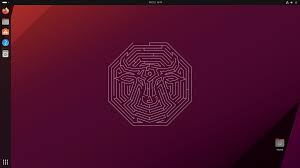

Apa itu Linux?
Linux adalah sebuah sistem operasi yang merupakan turunan dari Unix, yang dikembangkan pada awal 1990-an oleh Linus Torvalds. Linux merupakan perangkat lunak sumber terbuka, yang berarti kode sumbernya dapat diakses, dimodifikasi, dan didistribusikan kembali oleh siapa pun sesuai dengan lisensi perangkat lunak bebas seperti Lisensi Publik Umum GNU (GNU General Public License).
Sejarah Linux
Sejarah Linux dimulai pada tahun 1991 ketika Linus Torvalds, seorang mahasiswa komputer di Universitas Helsinki, mulai mengembangkan sistem operasi kecil untuk komputer pribadinya. Ia mulai bekerja pada kernel (inti) sistem operasi yang kemudian dikenal sebagai Linux. Proyek ini semakin berkembang ketika Torvalds mempublikasikan kode sumbernya di internet dan meminta kontribusi dari para pengembang lainnya.
Saat itu, Unix adalah sistem operasi yang sangat populer di lingkungan akademis dan komersial. Namun, Unix biasanya digunakan di mainframe dan komputer besar, sementara Linux, dengan sifatnya yang sumber terbuka, menawarkan alternatif yang lebih terjangkau dan dapat disesuaikan dengan berbagai keperluan, mulai dari server hingga perangkat berskala kecil seperti telepon pintar.
Dengan bantuan kontribusi dari ribuan pengembang di seluruh dunia, Linux berkembang pesat menjadi sistem operasi yang kuat, andal, dan sangat fleksibel. Ini digunakan di berbagai macam perangkat, termasuk server web, superkomputer, router, perangkat keras tertanam, dan bahkan di desktop dan laptop.
Linux juga menjadi dasar untuk distribusi sistem operasi yang lebih populer, seperti Ubuntu, Debian, Fedora, CentOS, dan banyak lagi. Meskipun kernel Linux merupakan bagian terpenting dari sistem operasi Linux, distribusi-distribusi ini biasanya mencakup perangkat lunak tambahan seperti antarmuka pengguna, perangkat lunak aplikasi, dan alat pengelolaan sistem yang memungkinkan pengguna untuk memanfaatkan potensi penuh dari sistem operasi Linux.
Jenis-jenis Distro Linux
Linux juga mempunyai banyak distro linux yang paling populer seperti Ubuntu, Debian, Fedora, dll, dan mari kita bahas semua distro linux yang populer saja.
1. Ubuntu

Ubuntu adalah salah satu distribusi Linux yang paling populer dan mudah digunakan. Ini didasarkan pada Debian dan dikembangkan oleh Canonical Ltd. Ubuntu memiliki fokus pada kemudahan penggunaan, keandalan, dan dukungan jangka panjang (LTS - Long Term Support).
Kelebihan Ubuntu
- Gratis dan Sumber Terbuka: Ubuntu didistribusikan secara gratis dan sumber terbuka, sehingga siapa pun dapat mengunduh, menggunakan, dan memodifikasi distribusi ini tanpa biaya.
- Mudah Digunakan: Ubuntu dirancang dengan fokus pada penggunaan yang mudah. Ini dilengkapi dengan antarmuka pengguna yang ramah dan intuitif serta banyaknya aplikasi bawaan untuk memenuhi kebutuhan pengguna sehari-hari.
- Stabil dan Aman: Ubuntu dikenal karena stabilitasnya yang tinggi dan keamanan yang baik. Dengan dukungan jangka panjang untuk versi LTS, pengguna bisa yakin sistem mereka akan tetap berjalan dengan baik dan mendapatkan pembaruan keamanan reguler.
- Dukungan Komunitas yang Luas: Ubuntu memiliki komunitas pengguna yang besar dan aktif. Ini berarti bahwa pengguna dapat dengan mudah menemukan bantuan, tutorial, dan sumber daya lainnya secara online.
- Kompatibilitas Perangkat Keras yang Baik: Ubuntu didukung oleh banyak perangkat keras dan memiliki dukungan yang baik untuk driver. Hal ini memungkinkan pengguna untuk menjalankannya dengan lancar di berbagai jenis komputer.
- Fleksibel dan Dapat Disesuaikan: Ubuntu dapat dengan mudah disesuaikan sesuai kebutuhan pengguna. Dengan akses ke sumber kode dan berbagai pilihan pengaturan, pengguna dapat mengubah dan menyesuaikan sistem sesuai dengan preferensi mereka.
Kekurangan Ubuntu
- Kurangnya Dukungan Perangkat Keras: Meskipun dukungan perangkat keras telah membaik dari waktu ke waktu, terkadang pengguna mengalami kesulitan dalam mendapatkan dukungan penuh untuk perangkat keras mereka, terutama untuk perangkat keras khusus atau terbaru.
- Ketergantungan pada GUI: Meskipun Ubuntu menawarkan antarmuka grafis yang ramah pengguna, beberapa pengguna mengeluh bahwa ada ketergantungan yang besar pada GUI. Ini dapat menjadi kendala bagi pengguna yang lebih suka atau memerlukan antarmuka baris perintah.
- Kurangnya Dukungan untuk Permainan: Meskipun ada peningkatan dalam dukungan permainan di Linux melalui proyek seperti Proton dan Wine, namun masih belum sebanding dengan dukungan permainan di Windows. Banyak game AAA masih dirilis secara eksklusif untuk Windows.
- Kurangnya Dukungan Perangkat Lunak Proprietary: Beberapa perangkat lunak proprietary mungkin tidak tersedia secara langsung untuk Ubuntu atau distribusi Linux lainnya, yang bisa menjadi kendala jika Anda sangat tergantung pada perangkat lunak tersebut.
- Kurangnya Dukungan Resmi: Sementara komunitas Ubuntu sangat aktif dan responsif, dukungan resmi dari Canonical (perusahaan di balik Ubuntu) terbatas pada versi Long-Term Support (LTS) dan produk komersial. Ini bisa menjadi masalah bagi pengguna yang membutuhkan bantuan langsung dari vendor.